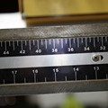

The following links describe a set of basic OpenCV tutorials. All the source code mentioned here is provided as part of the OpenCV regular releases, so check before you start copy & pasting the code. The list of tutorials below is automatically generated from reST files located in our GIT repository.
As always, we would be happy to hear your comments and receive your contributions on any tutorial.
| You will learn how to setup OpenCV on your computer! |
core module. The Core Functionality
 |
Here you will learn the about the basic building blocks of the library. A must read and know for understanding how to manipulate the images on a pixel level. |
imgproc module. Image Processing
 |
In this section you will learn about the image processing (manipulation) functions inside OpenCV. |
highgui module. High Level GUI and Media
 |
This section contains valuable tutorials about how to read/save your image/video files and how to use the built-in graphical user interface of the library. |
calib3d module. Camera calibration and 3D reconstruction
|  | Although we got most of our images in a 2D format they do come from a 3D world. Here you will learn how to find out from the 2D images information about the 3D world. |
feature2d module. 2D Features framework
 |
Learn about how to use the feature points detectors, descriptors and matching framework found inside OpenCV. |
 |
Look here in order to find algorithms usable on your video streams like: motion extraction, feature tracking and foreground extractions. |
objdetect module. Object Detection
 |
Ever wondered how your digital camera detects peoples and faces? Look here to find out! |
| Use the powerful machine learning classes for statistical classification, regression and clustering of data. |
photo module. Computational photography
 |
Use OpenCV for advanced photo processing. |
gpu module. GPU-Accelerated Computer Vision
| Squeeze out every little computation power from your system by using the power of your video card to run the OpenCV algorithms. |
| Run OpenCV and your vision apps on an iDevice |
 |
These tutorials show how to use Viz module effectively. |
 |
These tutorials are the bottom of the iceberg as they link together multiple of the modules presented above in order to solve complex problems. |
{kind=link}
{kind=link}
{kind=link}
{kind=link}
{kind=link}